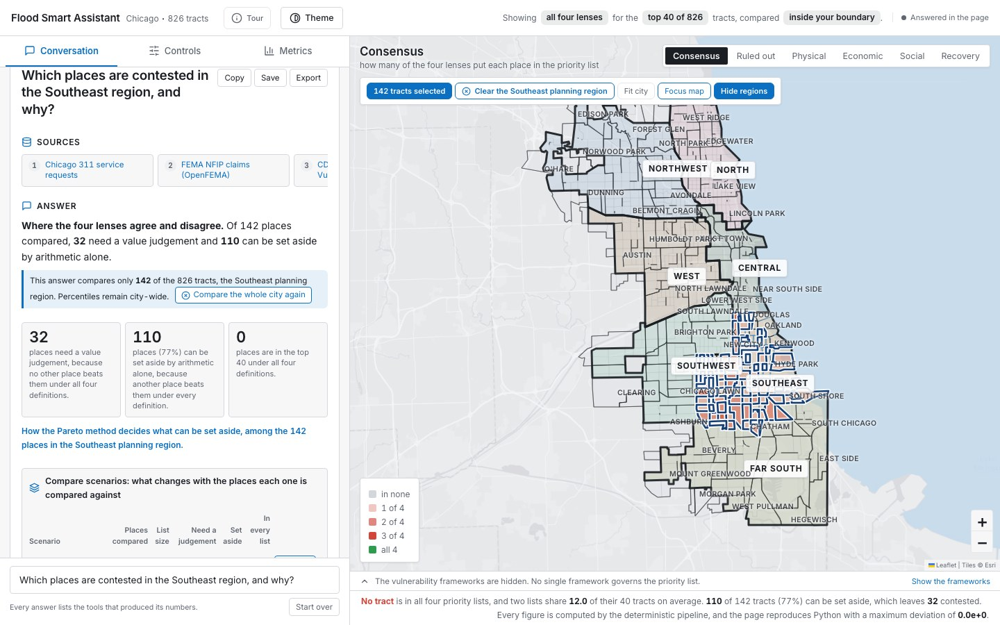
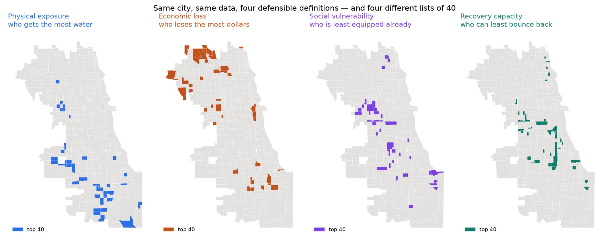
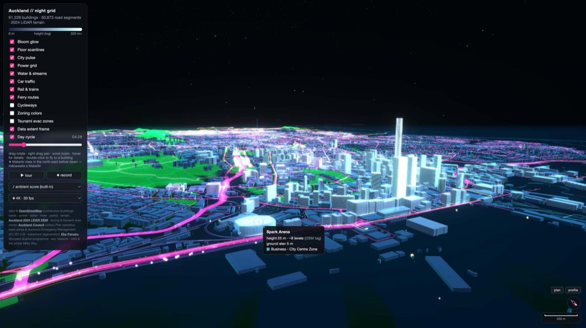
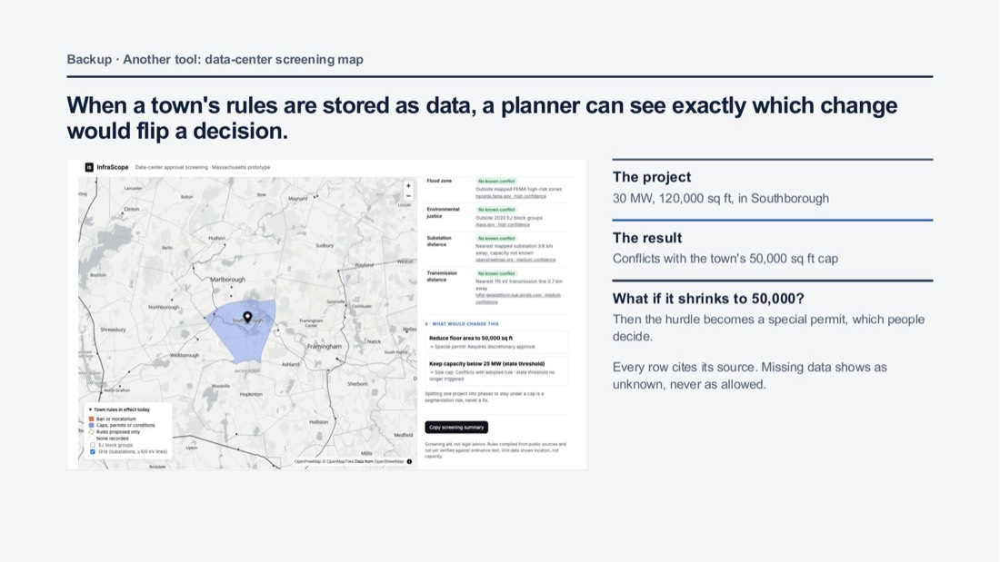
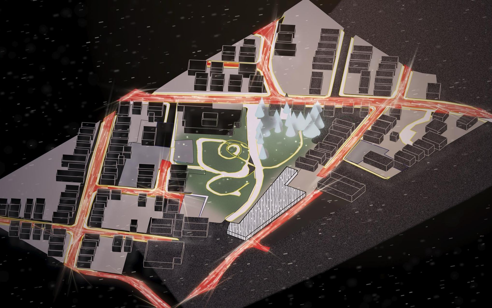
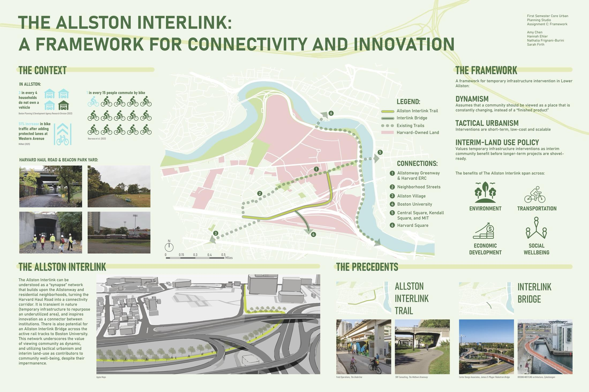

Urban analytics · Spatial data science · Harvard GSD
I use spatial data to inform urban planning, policy, and investment decisions.
Trained in architecture, then economics and mathematics, now urban planning at Harvard GSD. I start from the people a tool is for and the decision they face, then build the analysis, the maps and the story that make the answer usable. My work covers flood resilience, mobility, infrastructure and civic AI, and I want to help lead urban analytics as it shapes the future of cities.
Recent GIS, geospatial data engineering, geoprocessing and applied AI, alongside the planning work they inform.
First place · Round 1Google OASIS 2026 Student ChallengeGoogle DeepMind Student Travel Grant · ACM SIGSPATIAL 2026
Flood Smart Assistant: AI to broaden human judgment and accelerate action
Flood decisions bring together competing definitions of risk and stakeholders who need different evidence. I’m fine-tuning the platform as a decision-support tool: AI should help teams see more, understand trade-offs and move from evidence to action, while people retain control over priorities and decisions.
Why it mattersExposure, economic loss, social vulnerability and recovery capacity can point to different investment priorities. The framework makes those differences visible instead of hiding them in one score.
Designed around stakeholdersCommunity partners, planners, analysts and decision-makers need different views of the evidence, from local impacts and scenario comparisons to methods, sources and resource trade-offs.
Human-in-the-loop AI · 4 agents + coordinatorI’m fine-tuning four specialist AI agents and one coordinator. Together they support evidence retrieval and checks, deterministic geospatial analysis and clear explanations of scenario trade-offs. People review recommendations, set priorities and decide what happens next.


My roleTeam lead and corresponding author. I led the method, the interface and the product framing, ran the sprints, organized expert reviews, and presented and demoed the work.
RecognitionFirst place in Round 1 of the Google OASIS 2026 Student Challenge; Google DeepMind Student Travel Grant to ACM SIGSPATIAL 2026.
Technical spotlight · Geospatial data engineering · Geoprocessing · 2026
From elevation data to a better planning decision
A Python pipeline combines open building footprints with municipal LiDAR surface and terrain models to derive heights for 61,228 Auckland buildings, then renders the city in a browser. InfraScope takes a different kind of data—local rules—and connects it with flood, environmental-justice and grid layers so people can test how a proposal changes a permitting path.


Open-Data 3D City ModelingDEM / DSM differencing, building-height extraction and an open-data contribution pipeline for 61,228 buildings.
InfraScopeGeoprocess town rules with spatial constraints, show what changes a decision and cite the source behind each result.
Lower Allston is split by a highway and a former rail yard, and Harvard and the state are now remaking it. I used it to ask how far new technology should reshape a place before its safety is secured, and answered in drawings that move from the regional grid down to the street.

My roleIndividual work. I wrote the argument, made every map and drawing, and designed the layout.
ToolsRhino, Illustrator, InDesign, GIS
What it showsMoving across scales, from who supplies a neighborhood's power to the width of a bike lane, and drawing to persuade as well as to inform.
First-year urban planning studio · Harvard GSD · Oct. 2026 · Team of four
The Allston Interlink: a framework for connectivity and innovation
Beacon Park Yard will take decades to redevelop. Our framework asks whether Lower Allston, a neighborhood of constant arrival and departure, can get temporary infrastructure now: Harvard's private haul road turned into a greenway linking Allston, Harvard, Boston University and Kendall Square.
DynamismTreat the community as always changing, not a finished product.
Tactical urbanismShort-term, low-cost, scalable moves that test before they build.
Interim land useValue temporary public benefit like permanent benefit, before the yard is built out.

TeamAmy Chen, Hannah Ehler, Nathalia Frignani-Burini, Sarah Firth
Spatial Analysis · Harvard GSD · Fall 2026 · Individual
One neighborhood, six lenses
Six maps of Allston, each made a different way: on foot, from open crash data, from a 1936 rail map, along the walking network, from the census and from satellite heat. Together they tell one story. Allston's highways and rail yards decide who gets hurt, who walks far for food and where the heat sits.
Changes every 5 seconds · pauses on hover or keyboard focus
Revised after critique
Drag across the page to compare what I submitted with what I made after feedback.
⇆
SubmittedRevised
Full portfolio
All 28 pages, as spreads. Click a page to enlarge it, or use the arrow keys. A few pages of client work are blurred; they are available on request.
Planner and spatial analyst in the same room: connect policy, economics, infrastructure and place to evidence people can use.
My strength is moving between disciplines without losing analytical rigor. I frame a real decision, build traceable spatial evidence, test what it does and does not support, then connect the finding to a policy, design or investment action. I keep learning across fields, including real estate, to ask sharper questions about incentives, systems, outcomes and implementation. That translation—from analysis to a decision people can make—is the work.
What I bring to a studio
Each capability links to the work that shows it.
What I found
Seven results, each linked to the work behind it.
Nine places
Choose a place on the map or below to see what it gave me and the work it led to.
Index of all work
Recent spatial analytics, geospatial pipelines and applied-AI projects appear first, followed by earlier research and visual work.
About
I came to planning from architecture. Drawing buildings showed me that the questions I cared about sat at the scale of the city: how its housing, streets, water and energy are tied together, and who carries the cost when one of them fails. I studied economics and mathematical probability at Columbia to answer those questions with evidence, and I now study urban planning at the Harvard Graduate School of Design, working in urban analytics and spatial data science.
My strength is combining a planner's view of institutions, incentives and implementation with a spatial analyst's ability to build and interrogate evidence. I connect people, policies, infrastructure and place to ask sharper questions and find where action can shift outcomes. Before I build anything I ask who will use the answer, what decision they face and which insight would change it. Every number in my tools traces to a source; value judgements stay with the people who have standing to make them. I want to help cities turn rigorous, legible evidence into progress in the real world.
NowMaster in Urban Planning, Harvard GSD, 2026 to 2028
BeforeBA in Economics and Mathematical Probability, Columbia, 2022 to 2026
Also learningReal estate certificate coursework, deepening how I examine development systems, incentives, outcomes and implementation
Also nowResearch assistant, Healthy Places Design Lab · writing The Algorithmic Commons
ProgramsColumbia Summer Undergraduate Research in Mathematical Modeling, 2024 · Carnegie Mellon Summer School in Logic and Formal Epistemology, 2025
RecognitionGoogle OASIS 2026 Student Challenge, first place in Round 1 · Google DeepMind travel grant, ACM SIGSPATIAL 2026 · Marion Tournon-Branly Prize, Fontainebleau Schools of Fine Arts, 2023
I doUser research and problem framing · spatial analysis and modeling · data visualization and storytelling · public presentation
ToolsPython (GeoPandas, OSMnx), QGIS, ArcGIS Pro, PostGIS, remote sensing (Landsat, LiDAR), Census data, network analysis, WebGL, Illustrator and InDesign, human-in-the-loop AI